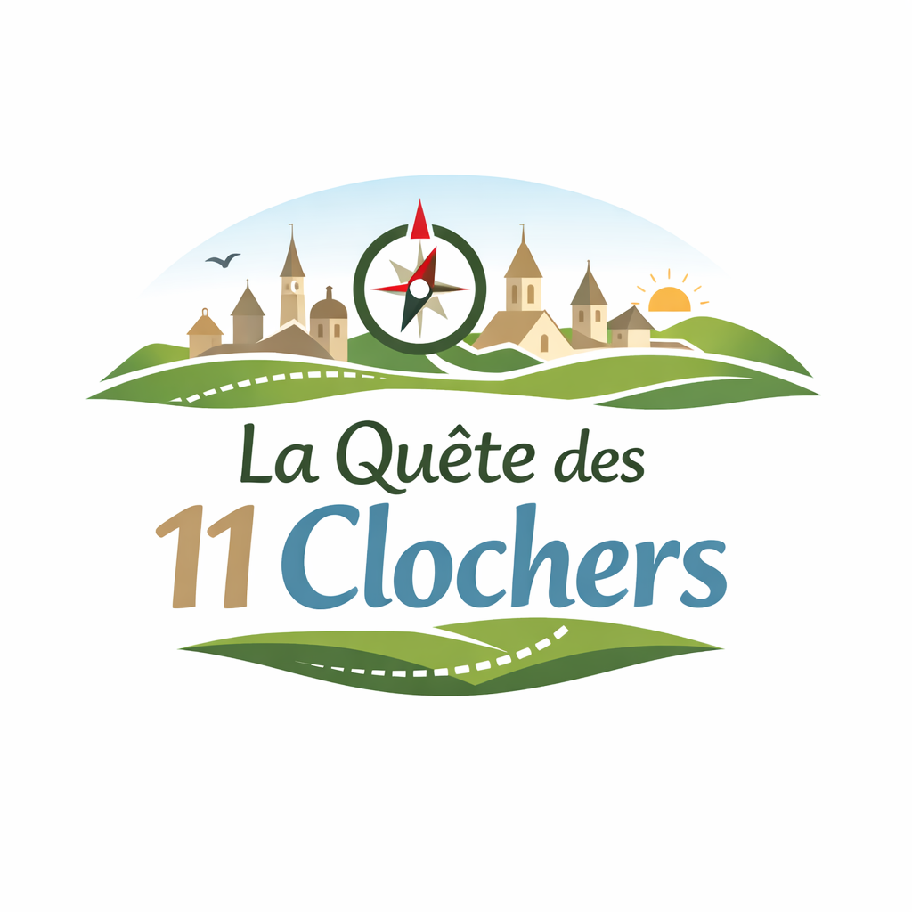

Les 11 clochers d’Argences en Aubrac veillent sur la vallée depuis des siècles. Chacun d’eux est lié à une histoire, un gardien, une mémoire. Mais avec le temps, ces histoires ont été oubliées…
Aujourd’hui, certains lieux murmurent encore leurs secrets.
🧭 Saurez-vous les découvrir ?